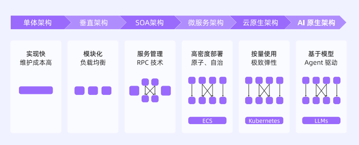
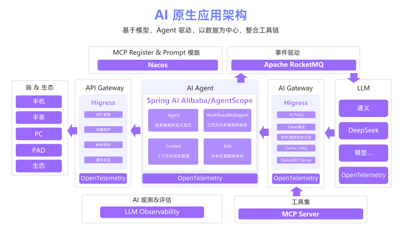
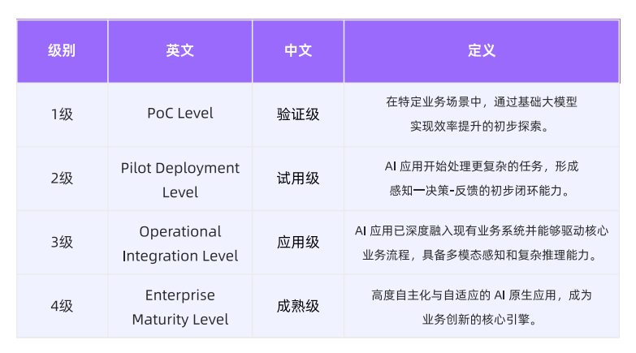

1.1 大模型技术发展回顾和产业价值
1.1.1 大模型发展回顾与展望
2022 年 11 月，ChatGPT 横空出世，模型即服务（MaaS）模式快速兴起，AI 从实验室走向商业场景。2024 年，OpenAI 推出 o1 模型和 4o 模型，大模型技术迎来质的飞跃。2025 年，多家大模型厂商支持模型上下文协议（MCP），Google 推出 A2A 架构，AI 从单点工具向系统级生产力工具转变。
1.1.2 大模型的五大产业价值
效率新工具、服务新体验、产品新形态、决策新助手、科研新模式。
1.2 AI 时代应用架构的演进
1.2.1 IT 应用架构的演进脉络

云原生架构是指，Kubernetes 等技术通过容器化、集群化管理，实现按量使用、秒级弹性的极致资源调度。
每一次架构升级，都是在满足业务规模更大、需求变化更快、资源成本更低的述求。
1.2.2 云原生应用架构向 AI 原生应用架构的跃迁
如果说，云原生解决的是如何高效地运行，那么 AI 原生是在此基础上解决如何智能地运行。
在云原生应用架构中，我们讨论的是容器如何管理、服务如何拆分、流量如何治理。而在 AI 原生应用架构下，其目标是在满足可扩展、可观测、安全合规的同时，最大化释放模型的智能潜力。
在大语言模型（LLM）出现之前，AI 只能以功能模块形态嵌入系统。LLM 具备通用理解、推理和生成能力，并能通过函数调用、外部工具联动和知识库，形成可扩展的 Agent 体系。AI 原生应用的运行逻辑不再完全由工程师编写的代码所决定，而是由大模型进行自出判断、行动和生成，并具备以下 3 个特征：
-
以 LLM 为核心，用自然语言统一交互协议；
-
以多模态感知扩展输入边界，以 Agent 框架编排工具链；
-
以数据飞轮驱动模型持续进化，实现系统的自我优化。
1.3 AI 原生应用及其架构的定义

AI 原生应用架构，涵盖了模型、应用开发框架、提示词、RAG、记忆、工具、网关、运行时、可观测、评估和安全等关键要素。
1.3.1 大模型推理决策
传统应用使用编程语言（Java、C++等）进行编码，AI 原生应用使用大语言模型（LLM），通过 Prompt（提示词）等自然语言方式进行构建。
LLM 具有语义理解与推理方面的能力，能够在面对模糊和复杂的开放式任务时，自主生成和调整业务执行逻辑，并根据需要完成工具调用与流程编排。
1.3.2 Agent 编排和执行
传统应用是工具，Agent 是助手。单 Agent 无法完成复杂任务时，可以协同多 Agent 编排完成复杂任务。自身能力受限时，可以扩展工具，甚至自己编写工具完成任务。
1.3.3 数据优化决策
模型输出可能存在偏差，甚至在某些情况下完全不符合用户或业务方的预期。为了解决这个问题，AI 原生应用必须具备基于数据驱动的持续进化能力。在多轮交互中，持续保留并利用历史信息，理解用户的偏好、行为习惯与目标。同时，应用还需要通过数据采集构建高质量的评测数据集，并结合行业数据、用户反馈数据和客户业务数据进行持续评估与优化。
1.3.4 工具调用与环境连接
大语言模型运行机制的本质仍是基于“输入 Token→输出 Token”的序列生成过程。受限于这一机制，模型既无法直接感知外部环境，也无法获取实时更新的知识，更缺乏对物理世界的直接操控能力。
AI 原生应用通常通过工具调用的方式扩展模型的环境连接能力。一是支持语音、图像乃至动作等多模态输入；二是支持联网检索获取最新信息，并且通过 API 对接外部系统，或直接驱动企业内部系统的业务流程。“模型+工具”协同运行。
1.4 AI 原生应用架构成熟度
1.4.1 AI 原生应用架构成熟度的定义
AI 原生应用架构成熟度，是指用于综合衡量 AI 原生应用在技术实现、业务融合与安全可信等方面所达到的水平，客观反映其从简单功能集成到复杂智能决策的演进阶段与发展层次。
1.4.2 AI 原生应用架构成熟度的演进

1、概念验证级：单点功能辅助
2、早期试用级：场景化初步闭环
3、成熟应用级：核心业务深度集成
4、完全成熟级：企业级自适应迭代
1.4.3 AI 原生应用架构成熟度的评估
以五大能力特征作为核心评估维度：自然语言交互能力、多模态理解与生成能力、动态推理与自主决策能力、持续学习与迭代能力、安全可信。
本评估体系旨在为 AI 原生应用的规划、开发、部署与优化提供一套完整的诊断工具和行动指南，最终推动其从概念验证走向规模化、高价值的产业应用。
参考资料：